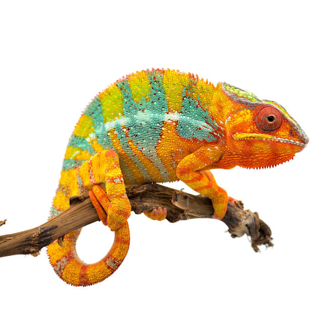
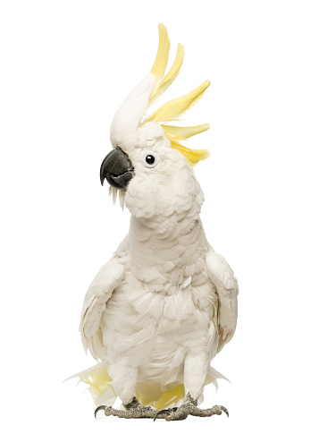

Animal Wiki
Rhinoceros Beetle

Rhinoceros beetles are herbivorous insects named for the horn-like projections on and around the males' heads. Most are black, gray, or greenish in color, and some are covered in soft hairs. Another name given to some of these insects is the Hercules beetle, because they possess a strength of Herculean proportion. Adults of some species can lift objects 850 times their weight. (That would be equivalent to a human lifting nine fully grown male elephants.) One way the beetles use this extreme strength is to dig themselves into leaf litter and soil to escape danger. Their horns also help them to do this. Rhinoceros beetles can grow up to six inches (15 centimeters), making them some of the largest beetles in the world.
Rhinoceros beetles are found on every continent except Antarctica. In the United States, they live in the south from Arizona northeast to Nebraska and eastward. Leaf litter, plants, and fallen logs provide a safe hideout for rhinoceros beetles during the day.All rhinoceros beetles are herbivorous. The adults feed on fruit, nectar, and sap. The larvae eat decaying plant matter. When disturbed, rhinoceros beetles can produce hissing squeaks. These aren’t actually vocal noises—instead, they’re produced when the beetle rubs its abdomen and wing covers together.
Chameleon
Chameleons or chamaeleons (family Chamaeleonidae) are a distinctive and highly specialized clade of Old World lizards with 202 species described as of June 2015. These species come in a range of colours, and many species have the ability to change colour.
Chameleons are distinguished by their zygodactylous feet, their swaying gait, and crests or horns on their brow and snout. Most species, the larger ones in particular, also have a prehensile tail. Chameleons' eyes are independently mobile, but in aiming at a prey item, they focus forward in coordination, affording the animal stereoscopic vision.
Chameleons are adapted for climbing and visual hunting. They live in warm habitats that range from rain-forest to desert conditions, with various species occurring in Africa, Madagascar, southern Europe, and across southern Asia as far as Sri Lanka. They have been introduced to Hawaii, California, and Florida.
Cockatoo
Cockatoos are recognisable by the prominent crests and curved bills. Their plumage is generally less colourful than that of other parrots, being mainly white, grey or black and often with coloured features in the crest, cheeks or tail. On average they are larger than other parrots; however, the cockatiel, the smallest cockatoo species, is a small bird. The phylogenetic position of the cockatiel remains unresolved, other than that it is one of the earliest offshoots of the cockatoo lineage. The remaining species are in two main clades. The five large black coloured cockatoos of the genus Calyptorhynchus form one branch. The second and larger branch is formed by the genus Cacatua, comprising 11 species of white-plumaged cockatoos and four monotypic genera that branched off earlier; namely the pink and white Major Mitchell's cockatoo, the pink and grey galah, the mainly grey gang-gang cockatoo and the large black-plumaged palm cockatoo.
Cockatoos prefer to eat seeds, tubers, corms, fruit, flowers and insects. They often feed in large flocks, particularly when ground-feeding. Cockatoos are monogamous and nest in tree hollows. Some cockatoo species have been adversely affected by habitat loss, particularly from a shortage of suitable nesting hollows after large mature trees are cleared; conversely, some species have adapted well to human changes and are considered agricultural pests.
Cockatoos are popular birds in aviculture, but their needs are difficult to meet. The cockatiel is the easiest cockatoo species to maintain and is by far the most frequently kept in captivity. White cockatoos are more commonly found in captivity than black cockatoos. Illegal trade in wild-caught birds contributes to the decline of some cockatoo species in the wild.